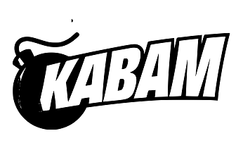

Passar Dos Anos
Para ajudar a financiar o desenvolvimento do jogo, microtransações opcionais foram adicionadas ao jogo, atraindo uma resposta mista dos jogadores. [15] Os desenvolvedores defenderam as microtransações, dizendo "elas pareciam ser a maneira mais conveniente e amigável para o cliente de pagar pelo jogo ... aqueles que amam apaixonadamente o jogo, podem gastar quanto quiserem, ajudando-nos a crescer o jogo ao longo do tempo. " [13] O jogo tem recebido atualizações "a cada poucas semanas" desde seu lançamento, com adições incluindo "masmorras, novas classes de personagens, centenas de itens e monstros, espaço no banco, animais de estimação, roupas, guildas" e muito mais. [13] Em 20 de fevereiro de 2012, o jogo foi disponibilizado na plataforma de distribuição digital Steam . [16] Após um ano de desenvolvimento pós-lançamento do jogo, Wild Shadow Studios foi adquirido pela Kabam em junho de 2012, com parte do acordo sendo que Spry Fox vendeu sua participação no jogo para Kabam. [17] Os co-fundadores da Wild Shadow, Alex Carobus e Rob Shillingsburg, saíram para buscar outras oportunidades após a aquisição, enquanto o funcionário da Wild Shadow, Willem Rosenthal, permaneceu na equipe de desenvolvimento durante a transição até junho de 2013. [18] [19] Spryfox continuou para desenvolver a Steambirds Alliance como um sucessor espiritual . Em 23 de junho de 2016, Kabam anunciou que iria transferir Realm of the Mad God para DECA Games em 15 de julho. [6] Em 12 de junho de 2018, a DECA Games revelou que o desenvolvimento de uma versão Unity do cliente havia começado. Um trailer disso foi lançado em 13 de dezembro de 2019, e revelou que a versão Unity seria chamada de Realm of the Mad God Exalt. Um beta fechado para o novo cliente começou em 19 de março de 2020, dado aos apoiadores do jogo que haviam chegado ao rank 2 de apoiador. Em 15 de abril de 2020, o cliente beta aberto foi lançado. [20] Em 22 de julho de 2020, o cliente Unity foi oficialmente lançado e se tornou o método padrão de jogar. O cliente Flash foi descontinuado em 23 de setembro de 2020, [21] e permaneceu jogável até então. [22]
